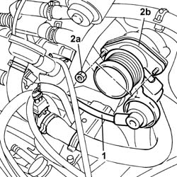

1060G50 PNEUMATICALLY CONTROLLED THROTTLE BODY R R
- Path
- Procedures > 10 ENGINE UNIT > 1060 DIESEL INJECTION SYSTEM > 1060G PRESSURE PUMP ELECTRIC CONTROL > 1060G50 PNEUMATICALLY CONTROLLED THROTTLE BODY R R
- Kind
- repair procedure (removal / refitting; the operation number is the code)
- Applies to
- engines: 2.0 JTD 8V; all production periods
- Interactive page
- https://sloeber94.github.io/elrnDB-fDct/en/#/244000855
Applies to: engines: 2.0 JTD 8V; all production periods
 Removing
Removing
 Refitting
RefittingOp. 1048B16 PIPES AND/OR ELBOW BETWEEN TURBOCHARGER AND THROTTLE CASING - R.R.
1. Disconnect the vacuum pipe for the pneumatic valve on the throttle casing.
2. Undo the fixing nuts (2a) and remove the throttle casing (2b).

Applies to: engines: 2.0 JTD 8V; all production periods
Refitting
Removing- Fit the throttle casing on the intake manifold and the gasket.
- Tighten the nuts fixing the throttle casing to the intake manifold.
- Connect the vacuum pipe for the pneumatic valve on the throttle casing.
Op. 1048B16 PIPES AND/OR ELBOW BETWEEN TURBOCHARGER AND THROTTLE CASING - R.R.